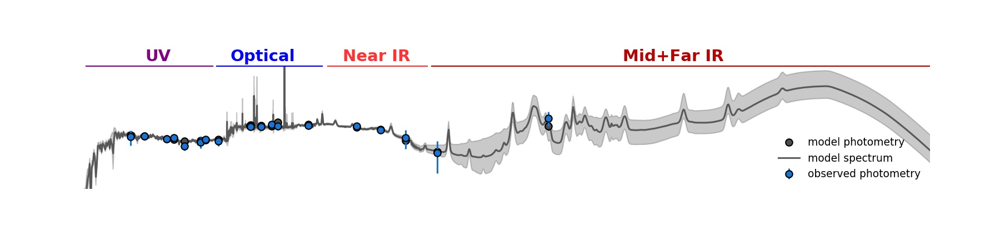

Intro
I am an associate professor of astronomy & astrophysics at The Pennsylvania State University. I hold the Dr. Keiko Miwa Ross Early Career endowed chair. My research focuses on understanding the processes of galaxy formation through combining modern, deep galaxy surveys with telescopes like JWST with statistics and machine learning.
In particular, I specialize in interpreting galaxy photometry and spectra using complex models for the stars, gas and dust living within them, in building and exploring analytical and empirical models of the evolving galaxy population as a whole, and in using astrostatistics and machine learning to better understand the universe. I've harnessed millions of hours of supercomputer time running specialized code to build a more complete picture of how galaxies form and evolve. I've worked on a wide range of science ranging from understanding the stellar origins of kilonova explosions to developing new methods for wide-field infrared galaxy surveys. I am very lucky to have been afforded the privilege of asking the big questions of the Universe!
Some of my current active projects include the Prime Focus Spectrograph galaxy survey , searching for first-light galaxies in the deep JWST survey UNCOVER , analyzing high signal-to-noise spectroscopy of galaxies at 'cosmic noon' in the Blue Jay survey with JWST, and developing software to analyze galaxy spectra with JWST. I'm also an active member of the Institute for Gravitation and the Cosmos and the Institute for Computational and Data Sciences at Penn State.
Below is recent press coverage of research done in my group:
- June 2024: Little red dots in early universe host ancient stellar populations (Space.com, Universe Today, Sky & Telescope, IFLScience, Earth.com, Mashable), and an AAS Journal Series Author Series interview .
- Feb 2024: 'Cosmic lighthouses' that cleared primordial fog identified with JWST (PopSci, Science Daily.
- Nov 2023: JWST discovery of the second- and fourth-most distant galaxies (PopSci, Business Insider, Space.com, Newsweek, Daily Mail, MSN).
- July 2023: Featured in hour-long Cosmic Front documentary on JWST's first year of science, NHK / Japanese National Television.
- March 2023: Machine learning in astrophysics , PSU ICDS Feature Story.
- Feb 2023: Massive early galaxies defy prior understanding of the universe , ANU/PSU/NASA/Nature, (NPR, the Guardian, the Atlantic, CNN, KUSI+ WTAJ television interviews, Fraser Cain interview)
- Feb 2023: NASA’s James Webb Telescope uncovers new details in Pandora’s Cluster , NASA/STScI/PSU Release.
- Nov 2022: Bright light from early universe 'opens new chapter in astronomy' , NASA/STScI/PSU Release.
- Nov 2022: Tracing the origins of rare, cosmic explosions , NASA/STScI/PSU Release.
- Sep 2021: Early, massive galaxies running on empty , NASA/STScI/PSU Release.
My Research Group
Current Group Members
My current group members are below:
Bingjie Wang, postdoctoral researcher, measuring the properties of high-redshift galaxies and mysterious little red dots using JWST.
Nikko Cleri, Eberly Postdoctoral Fellow, studying mysterious high-energy ionizing sources in the early universe using JWST.
Yijia Li, 7th year graduate student, Bayesian hierarchical modeling and neural net-powered emission line modeling.
Elijah Mathews, 7th year graduate student, high-dimensional stellar pops fitting (resolved and unresolved) with neural net emulators.
Emilie Burnham Faith, 2nd year graduate student, examining distant galaxy populations to understand the short-term timescales of fluctuations in their star formation rates.
Former Group Members
Group members who have graduated and gone on to other positions.
Will Bowman - Ph.D Penn State 2022; current postdoc at Yale University

Junyu Zhang - BS Astronomy & Astrophysics Penn State 2023; current graduate student at University of Arizona
Research
Simple Models of Galaxy Assembly
I started my Ph.D in 2010 at Yale University with Professor Pieter van Dokkum. This was an exciting time to be studying galaxy evolution. We were in the middle of the first wide, deep, and unbiased (mass-selected) surveys of galaxy evolution at "cosmic noon", spear-headed by ambitious programs with the Hubble Space Telescope such as 3D-HST and CANDELS. As a result, astronomers had now surveyed the vast majority of the galaxy population over the majority of cosmic time for the very first time. My advisor and I thought that it was now the ideal time to "put it all together" and write down how galaxies grew up in a simple analytical model. This was the beginning of my thesis.
However, after constructing and testing our analytical framework, we found a serious problem with this plan. Applying our model to two independent measurements of galaxy mass growth (the current rate of star formation and the current mass locked up in stars) resulted in galaxy growth rates which were systematically offset by a factor of two. This was a big problem. To put it in persepctive, our model suggested that a typical ancestor of the Milky Way would grow by a factor of 4-16 from z~2, a confidence interval so large as to be almost useless!
2015: Even after changing the SFR(M), observed masses and SFRs disagreed
A New Method to Measure Galaxy Properties
The problem lay in the models we used to convert galaxy observations into galaxy properties. While these models had had many successes over many years, they were not quite precise enough to answer the questions we needed to answer. We identified three specific problems:
- The models did not include enough of the relevant physics, e.g. emission from black holes or nebulae.
- The assumptions built into them were not physically self-consistent.
- The models needed to use more clever statistics to translate the weak observational constraints into very broad parameter estimates
2017: Here Prospector fits our new galaxy SED model Prospector-α to photometry
A New Cosmic Consensus
We applied this new Prospector-α model to a mass-complete sample of 58,461 galaxies across 0.5 < z < 2.5 from the 3D-HST survey. These new inferences lowered the observed cosmic star formation rate density by ∼0.2 dex and increase the observed stellar mass growth by ∼0.1 dex, finally bringing these two measurements into agreement and implying an older, more quiescent Universe than found in previous work.2019: A new consensus in the older, more quiescent Universe inferred by Prospector-α
Outreach
In additional to my professional mentoring, I believe that knowing more about science and the scientific process improves the lives of everyone (and -- talking to folks about it is lots of fun!).
Flipped Science Fair
I host(ed) an annual reverse science fair, where professional researchers present their research to students from local elementary and middle schools. The students serve as “judges” and announce a winner at the end of the event. This encourages and develops outreach skills among researchers while simultaneously engaging the middle school students in a critical form of active learning.
Ashtekar Frontiers of Science Lecture
I gave an Ashtekar Frontiers of Science 2024 Lecture at Penn State, entitled “Surprises at the Dawn of Time from James Webb: A First Look at the First Stars, Galaxies, and Black Holes”, with an intro from Prof. Michael Eracleous. This was an exciting opportunity to share cutting-edge research from the James Webb Space Telescope to the Penn State community, with over 200 attendees!
Visiting URJ 6 Points Sci-Tech Academy
Giving talks to middle schoolers at science summer camp about my thesis research, and talking to them in their classrooms!
Contact
My office is Davey Laboratory 515. You can reach me electronically at (firstname).(lastname)@psu.edu.